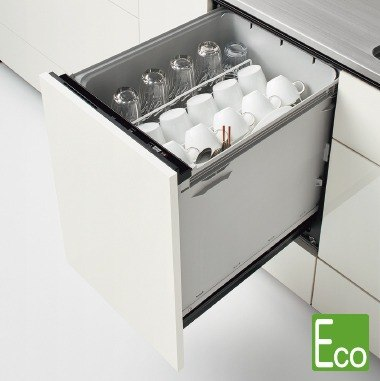
W450mmプルオープン 食器洗い乾燥機 ZWPJ45M21PDZ
手洗いより節水で省エネ。家事の手間を省きます。
+289,900円（税込）
まずはご相談
キレイと快適が毎日つづく快適キッチン！

展示店舗：金沢野々市店・小松店・羽咋店
※写真はイメージになります。※食洗機はオプションになります。
扉カラー（全10色）※下記カラー以外選択の場合はオプションとなります
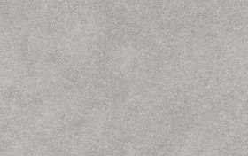
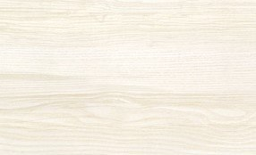
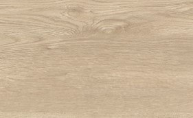
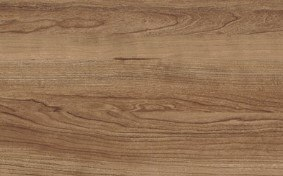
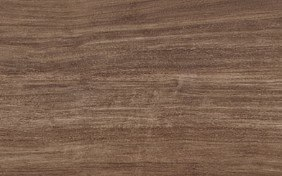
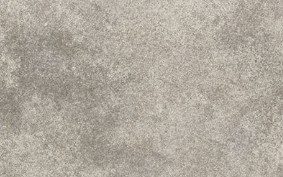
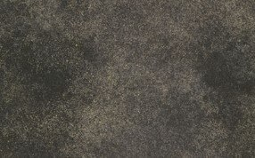
天板カラー（全4色）
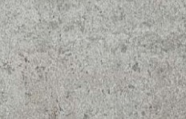
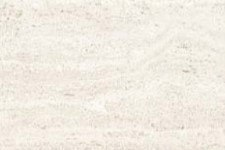
取っ手（全6種）
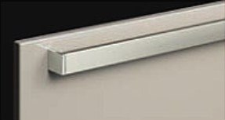
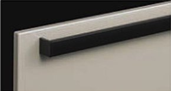
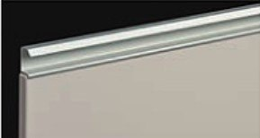
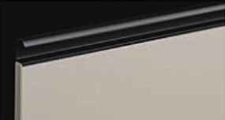
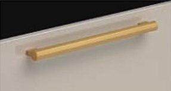
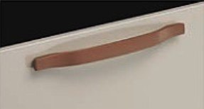
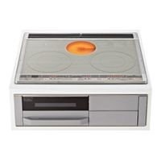
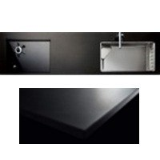
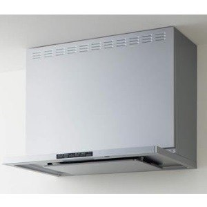
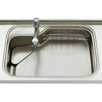
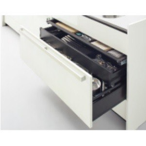
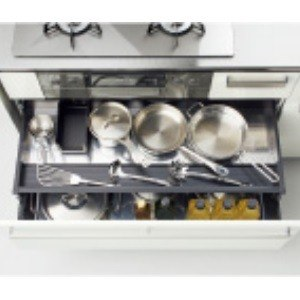
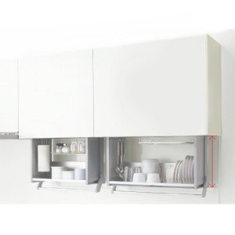
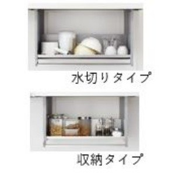
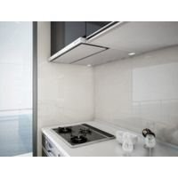
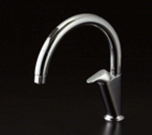

食品を扱う場所には、もっともふさわしい素材。
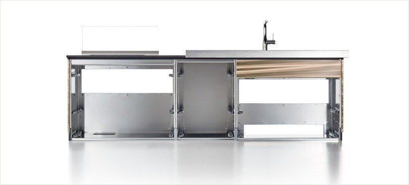
料理を思い切り楽しめます。
底板・側面・骨組みまでステンレス。お手入れ簡単。
耐久年数が長く、リサイクル率は80％以上。
高温に耐え得る高いパフォーマンスで、変色や変質の心配がほとんどなく長くお使いいただけます。ほぼ無孔質なので化学品に対しても高い抵抗性を誇ります。
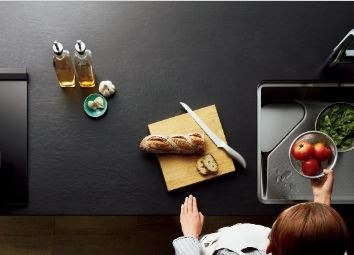
引っ掻き傷に対し強靭な強さを発揮します。
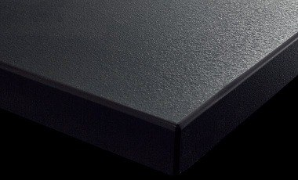
野菜くずも油汚れも、水にのって排水口へ。手間をかけずにキレイが保てます。
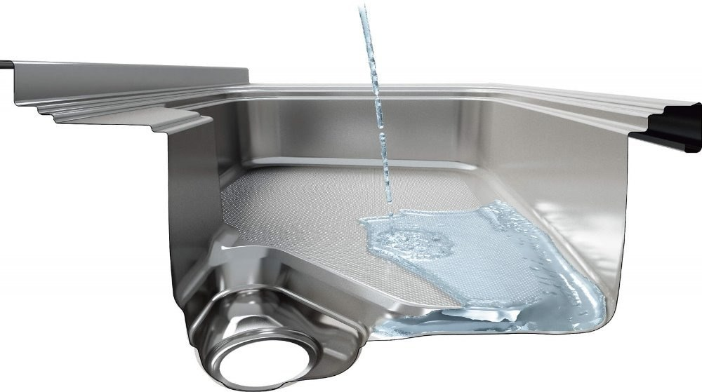
継ぎ目無し＋美コートで、汚れをガード。
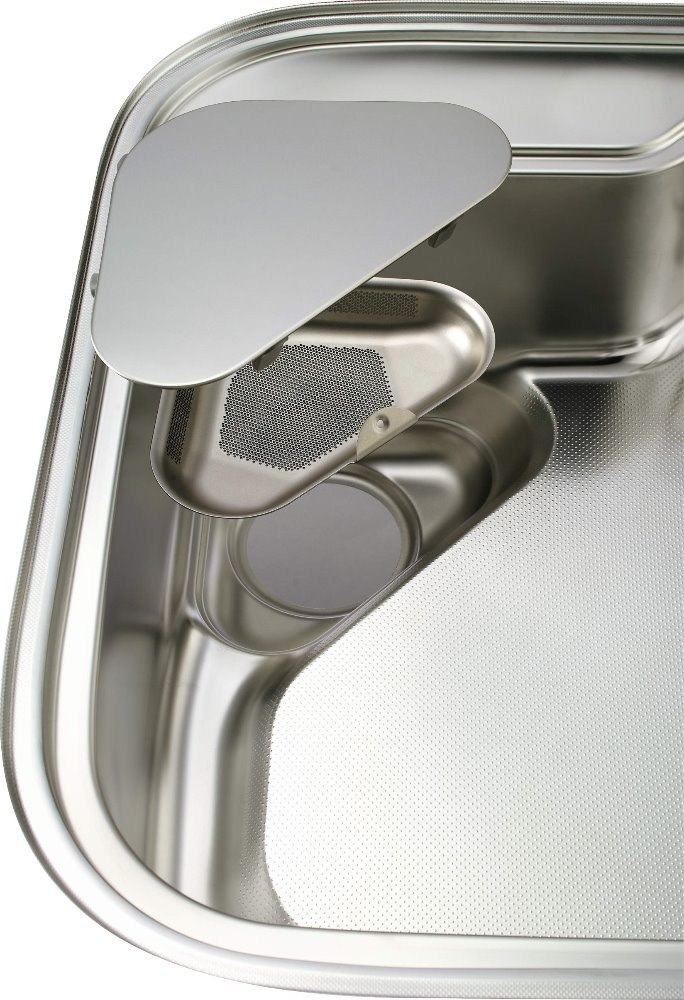
水はね音を抑えるから、会話を妨げられません。
調味料や洗い物などをしまえるので、調理台がすっきり片付きます。
キッチンペーパーなどをまとめて収納。
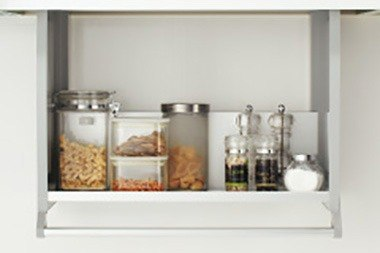
洗い物を濡れたままそのまま置けます。
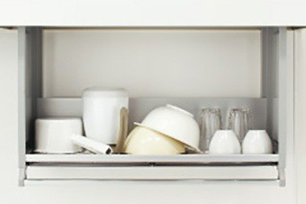
※現時点での参考価格となります。

手洗いより節水で省エネ。家事の手間を省きます。
+289,900円（税込）
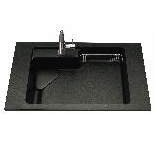
アクリストンよりも硬度をあげ、丈夫さが増した硬質アクリル人造大理石。
+57,500円（税込）
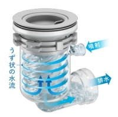
自動洗浄機能を搭載した新機能トラップ。ヌメリの発生を抑止し、キレイをキープします。
+52,300円（税込）
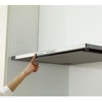
面倒な換気扇フィルターのお手入れも、ボタンひとつで自動洗浄。（W900／H700扉面材）
+94,700円（税込）※オプション価格は近日中に値上げするため、現時点での参考価格となります。
標準工事費込みで価格を比較する際は、どこまで工事が含まれているかをしっかり確認しましょう。
※会社によって「標準工事」の内容は違います！
ヤマキシ標準工事内容

ショールームには北陸最大級の
住宅設備を展示しています。
見積り・現地調査は無料。
しつこい営業はいたしません。